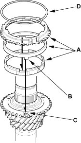
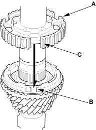
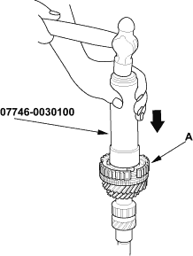
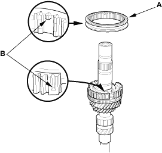

Special Tools Required
- Driver, 40 mm I.D., 07746-0030100
- Attachment, 30 mm I.D., 07746-0030300
NOTE:
- Refer to the Exploded View as needed during this procedure.
- Clean all the parts in solvent, dry them and apply lubricant to all contact surfaces except the 3rd/4th and 5th/6th synchro hubs.
- Install the needle bearing on the mainshaft.
- Install the double cone synchro assembly (A) by aligning the synchro cone fingers (B) with the holes in 3rd gear (C), then install the synchro spring (D).

- Install the 3rd/4th synchro hub (A) by aligning the synchro cone fingers (B) with the grooves in 3rd/4th synchro hub (C).


- Install the 3rd/4th synchro hub (A) using the special tool.

- Install the 3rd/4th synchro sleeve (A) by aligning the stops (B) with the 3rd/4th synchro sleeve and hub. After installing, check the operation of the 3rd/4th synchro hub set.
